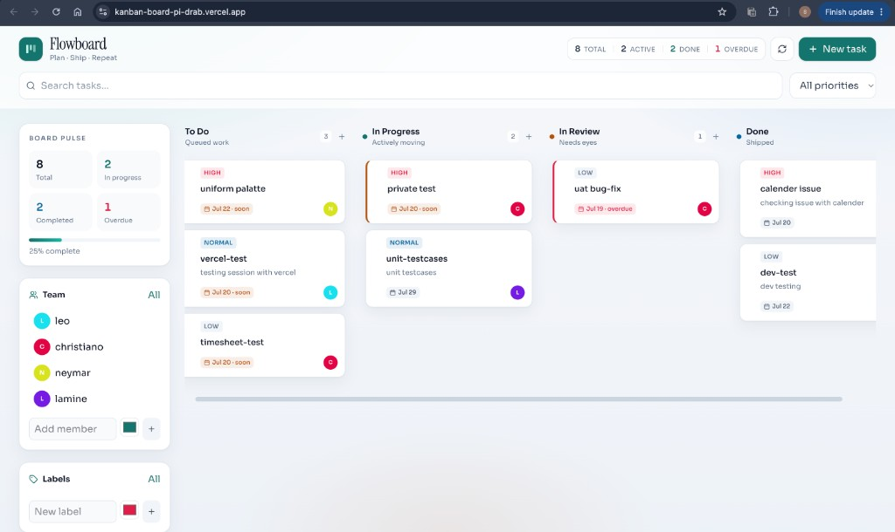
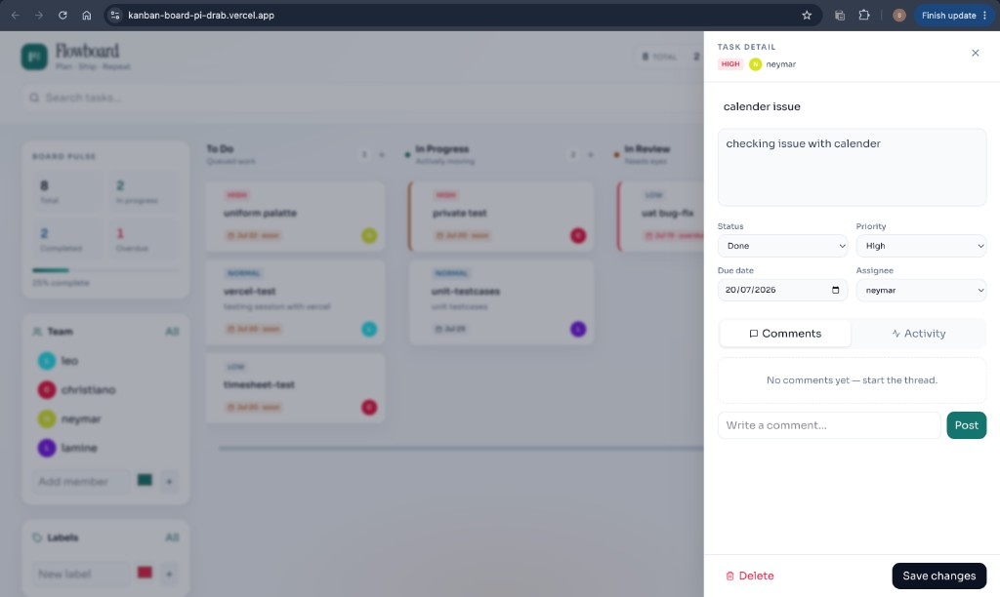
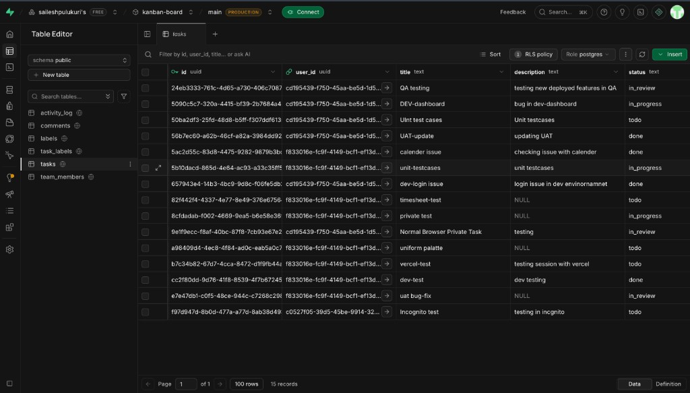

A polished Kanban task board with guest authentication, drag-and-drop status updates, and collaboration features — built for the Next Play Games internship challenge.
Candidate: Sailesh Pulukuri · Document: sailesh_pulukuri_task_manager_assessment.pdf
Flowboard is a full-stack Kanban task manager where users can create work items, move them across board columns, assign teammates, attach labels, leave comments, and track activity — all behind a guest session so each visitor only sees their own data.
Build a board that feels production-ready — not a generic todo list. Design quality was treated as a first-class requirement: clear hierarchy, intentional typography/color, smooth drag interactions, and thoughtful empty / loading / error states.
| Requirement | Implementation |
|---|---|
| Kanban columns | To Do, In Progress, In Review, Done with empty states and counts |
| Drag & drop | @dnd-kit; status updates optimistically, then persisted to Supabase |
| Task create/edit | Modal + detail drawer for title, description, priority, due date, assignee, labels |
| Guest accounts | Supabase anonymous sign-in on first launch; user_id on every owned row |
| Persistence + security | Postgres tables with RLS policies; only public anon/publishable key in frontend |
Live production UI on Vercel and the corresponding Supabase tasks table in the dashboard.

Main board with Board Pulse stats, team roster, search/filters, and four columns. Cards show priority, due urgency, and assignee avatars.

Side drawer for editing status/priority/due date/assignee, plus Comments and Activity tabs, delete, and save actions.

Backend persistence in Supabase Table Editor. Related tables: team_members, labels, task_labels, comments, activity_log. RLS policy active on tasks.
React 19, TypeScript, Vite, Tailwind CSS v4, Lucide icons, date-fns
@dnd-kit for accessible drag-and-drop across columns with optimistic updates
Supabase Auth (anonymous), Postgres tables, RLS policies, no custom API required
Vercel for the SPA; env vars for VITE_SUPABASE_URL + anon key
GitHub public repository with schema SQL and README setup guide
Guest isolation via auth.uid(); service role key never shipped to the client
| Area | Responsibility |
|---|---|
| src/components/Board.tsx | Column layout + drag/drop orchestration |
| src/hooks/useBoard.tsx | Shared board state, filters, stats, CRUD actions |
| src/lib/api.ts | Supabase reads/writes for tasks, members, labels, comments, activity |
| supabase/schema.sql | Tables, indexes, triggers, and RLS policies |
Schema lives in supabase/schema.sql. Anonymous sign-in must be enabled under Authentication → Providers → Anonymous.
| Table | Purpose / key fields |
|---|---|
| tasks | Core work items: id, user_id, title, description, status, priority, due_date, assignee_id, position, created_at, updated_at. Status values: todo | in_progress | in_review | done. |
| team_members | Per-guest roster: name, color, avatar_url for assignees. |
| labels / task_labels | Custom tags and many-to-many assignment to tasks. |
| comments | Chronological discussion thread per task. |
| activity_log | Timeline events (created, status moved, assigned, commented, updated). |
create table public.tasks (
id uuid primary key default gen_random_uuid(),
user_id uuid not null references auth.users(id) on delete cascade,
title text not null,
description text,
status text not null default 'todo'
check (status in ('todo', 'in_progress', 'in_review', 'done')),
priority text not null default 'normal'
check (priority in ('low', 'normal', 'high')),
due_date date,
assignee_id uuid references public.team_members(id) on delete set null,
position integer not null default 0,
created_at timestamptz not null default now(),
updated_at timestamptz not null default now()
);
alter table public.tasks enable row level security;
create policy "Users manage own tasks"
on public.tasks for all
using (auth.uid() = user_id)
with check (auth.uid() = user_id);
git clone https://github.com/saileshpulukuri/kanban-board.git cd kanban-board npm install cp .env.example .env # Set VITE_SUPABASE_URL and VITE_SUPABASE_ANON_KEY npm run dev
| Criteria | Evidence |
|---|---|
| Design quality | Intentional typography, teal/slate system, polished cards & drawer |
| Board functionality | 4 columns, drag-and-drop, create/edit/delete |
| Persistence & security | Supabase schema + anonymous auth + RLS |
| Advanced features | Team, labels, comments, activity, filters, due urgency, stats |
| Live execution | Deployed at the Vercel URL above |